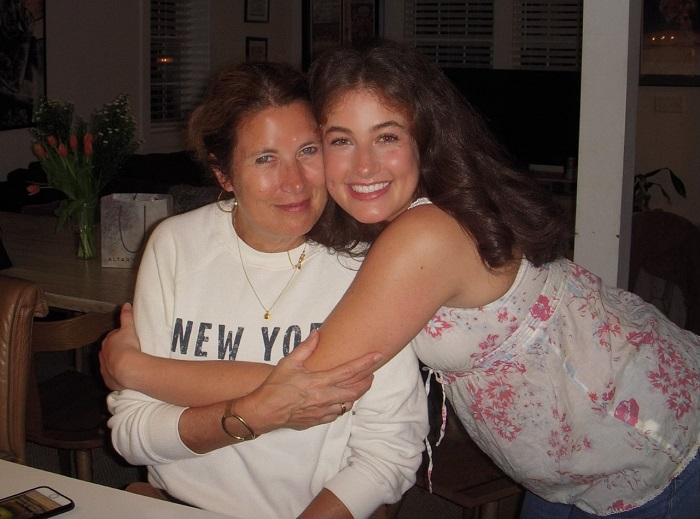
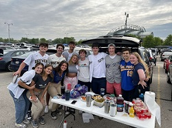
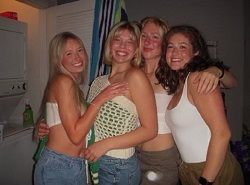
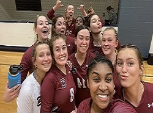
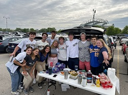
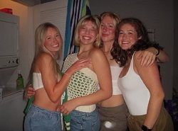
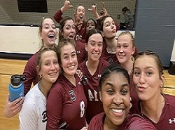

 





About Me
My name is Lauren DeStefanis and I am a second semester sophomore at the University of South Carolina studying biology with a minor in women and gender studies. I am from Milwaukee, Wisconsin, where I went to an all-girls Catholic High School. I played volleyball, basketball, and rugby in high school, and continue to play volleyball now on the club team and basketball on my sorority's intramural team. I love to read, watch netflix, go out to eat, and hang out with friends.
...
I have two older brothers, Ben, who graduated from the University of Minnesota, and Joe, who is about to graduate from the University of Wisconsin. Clearly, I am the first child to move far away from home. I have a dog named Ruby who is my pride and joy and I miss her dearly when I'm here at school. My parents send me pictures of her every week, and if they forget I make sure to always remind them.
My Future Career Plans
As a biology major, I plan to use my undergraduate education to apply to and attend Physician Assistant (PA) school. I currently work as a Certified Nursing Assistant (CNA) in the summers to earn experience and patient care hours, which PA schools require for application. I am working on completing all of the prerequisite courses I need to apply to PA school, and I feel that my Women and Gender Studies minor will give me a more educated perspective on things like women's health.
...
I want to move back north for PA school, hopefully to either Milwaukee or Chicago. I am applying to Marquette University in Milwaukee, and to several Chicago schools including Rush University and Northwestern University. Being a PA will allow me to work in a wide range of specialties, but some of my top choices at the moment are dermatology, anesthesiology, and emergency medicine. I want to be in dermatology and hopefully start my own office when I start a family because the hours are very manageable.